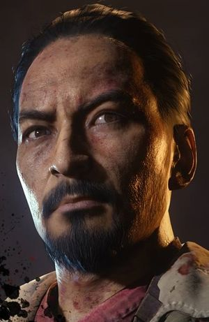

Personajes
personajes
Este es el Dr. Richtofen, conocido cariñosamente como "el carnicero" por víctimas mientras gritan en momentos de agonía antes de morir. A lo largo de su carrera, Richtofen ha estado a la vanguardia de la investigación de la tortura y la extracción de información. Richtofen es un sociópata incurable y no ve ninguna distinción moral entre la muerte natural y el asesinato, la víctima es la víctima, independientemente de la forma en que su desaparición se manifiesta. El Doctor Richtofen tiene una colección de animales disecados, la mayoría de ellos se plantea en posiciones de terror en el instante de su muerte"
Demóstata Dempsey: Héroe Americano, originalmente asignado para interceptar al Dr. Edward Richtofen en el norte de Francia, Dempsey ahora lucha junto a Nikolai, Takeo y Richtofen mientras intentan poner fin a la máquina de guerra enemiga de una vez por todas. Que su parte justa de derramamiento de sangre, nada podría haberlo preparado para los acontesimientos de Der eisendrache ... "

Takeo fue un orgulloso capitán en el Ejército Imperial, habiendo nacido en una familia poderosa, de la cual habían salido Samurais reconocidos en el Imperio. Takeo no era una excepción, y pronto se ganó la apreciación de su familia. Ahora, ha redirigido sus esfuerzos en luchar contra sus hermanos no-muertos (y zombies en general), mientras medita sobre diversas cuestiones filosóficas. Takeo es el más serio del grupo de supervivientes, y además el que menos habla en el grupo.
- " Se dice que es mejor haber amado y perdido, que nunca haber amado en absoluto. Yo ... me siento diferente." El arrepentimiento puede consumir a un hombre tan profundamente, que ennegrecerá su corazón y tragará su alma. Tanto tiempo hemos estado luchando ... muchas batallas, muchas guerras ... Perdí ... sólo una ... Hemos visto cosas imposibles, he engañado a la muerte innumerables veces ... Ya no puedo negar la posibilidad de un poder invisible, una mano guía ayudando Nosotros para cumplir nuestro destino Mi camino es escogido ... Nuestro destino está sellado Pero los inocentes ... los niños ... Los que no están contaminados por la oscuridad y el caos Pueden encontrar un mañana mejor " .
- - Nikolai Belinski
-

zombies
Margwas es un enemigo en Call of Duty: Black Ops III en los mapas deZombies Shadows of Evil , Dead Ops Arcade 2: Cyber's Avengening , andRevelations .
El Margwa es un monstruo de tres cabezas que lleva tentáculos. Se desliza en el reproductor si está cerca de ellos, similar a la forma en que un zombi. Este ataque hace la misma cantidad de daño que el ataque de un zombi regular. También tiene un ataque de golpe. Este ataque es lo suficientemente potente como para derrotar a un jugador en un solo golpe sin Juggernog , y losuficientemente potente como para destruir el Escudo de Rocket de un jugador.Los Margwa también destruirán Li'l Arnies desplegado por el jugador.
Para matar a un Margwa, el jugador debe esperar hasta que abra una de sus bocas o utilizar el Pop Shocks GobbleGum , que el efecto matará con un cuchillo y un ligero retraso. Una vez que la boca está abierta, el jugador debe abrir fuego en la cabeza con la boca abierta. Después de sufrir suficiente daño, la cabeza será destruida, y los Margwa se pondrán más furiosos y se moverán más rápido, además de liberar a un Parasita . El jugador debe entonces repetir este proceso con las dos cabezas restantes para matar a los Margwa. El primer Margwa que es asesinado siempre dejará caer el Corazón Margwa, que se requiere para elaborar el Servidor Apothicon . Si el corazón no es recogido, desaparecerá después de un tiempo, pero aparecerá de nuevo cuando el próximo Margwa sea asesinado. Cada cabeza destruida premiará al jugador 500 puntos, lo que significa que matar a un Margwa completo dará 1.500 puntos. También se verá afectado por el doble de puntos que duplica cada cabeza
zombies especiales
Los Hellhounds son un tipo de enemigo de Call of Duty World At War,Call of Duty Black Ops y Bo2 del Modo zombies, suele aparecer en la ronda
6. Cuando lo hacen el mapa se llena de niebla y salen rayos, y caen en forma de rayos buscándote lentamente. Cuando te ven o les disparas salen corriendo hacia ti. Aparecen en los mapas de Shi no numa, Der riese, Kino der toten y Dead Ops Arcade. Puedes elegir si aparecen o no en Green Run (Pueblo y Granja).Pueden aparecer diversos tipos de Hellhounds,uno normal y otro en llamas,como se aprecia en la foto de la derecha.La diferencia de estos es que cuando el normal muere se queda tendido en el suelo,después al rato desaparece su cadáver,y el que está en llamas cuando muere explota y libera un pequeño humo verde que no afecta en algo al jugador.
El
Panzer Soldat (Traducido para "
Soldado Acorazado") es un enemigo que aparece en el
Call of Duty: Black Ops II y Call of Duty: Black Ops III en los mapas de Zombies
Origins, Revelations, y Der eisendrache. Se toma la apariencia de un zombie en un traje blindado, y saltará desde fuera de los límites del mapa usando un paquete de cohetes para atacar a los jugadores. Es muy difícil de matar, y está armado con un lanzallamas y una garra gigante para lidiar jugadores. El primer panzer soldat que aparece tiene la primera pieza del bastón de fuego,no hay otra manera de conseguirla. El primer Panzer Soldat de cada grupo en las rondas posteriores se reducirá al azar Power-Up en lugar de una pieza para el Cetro y además se caracteriza por un enemigo molesto en zombies.

DR.activison.2017
.jpg)
.jpg)